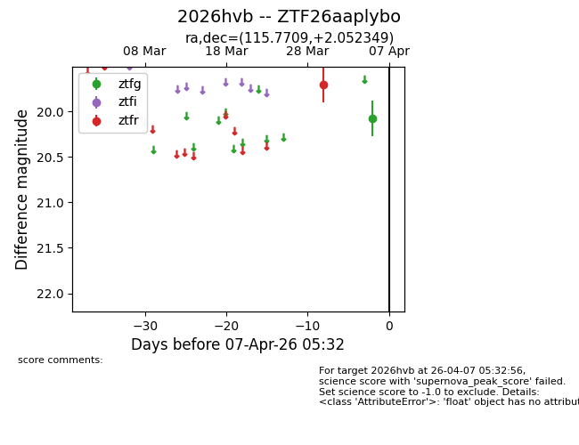
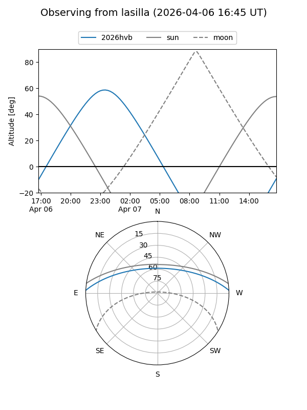
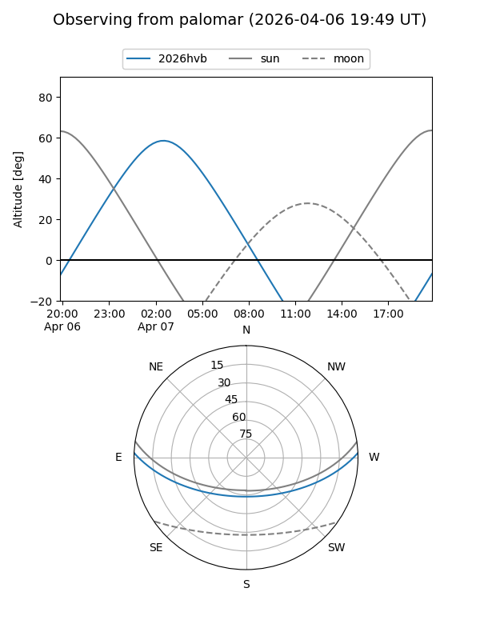
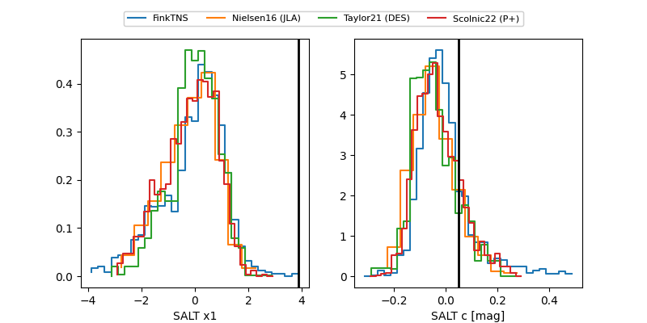

2026hvb
Target 2026hvb at 2026-04-07 05:36
Aliases and brokers:
FINK: link
Lasair: link
ALeRCE: link
TNS: link
YSE: link
alt names
ZTF26aaplybo (ztf,fink_ztf)
2026hvb (tns,yse)
Coordinates:
equatorial (ra, dec) = 115.7709,+2.05235
equatorial (HMS+DMS) = 07:43:05.01,+02:03:08.45
galactic (l, b) = (217.0392,+12.41933)
Flags:
Photometry:
last ztfg=20.08, ztfr=19.71
1 ztfg, 1 ztfr detections
Lightcurve

Visibility


Additional plots
